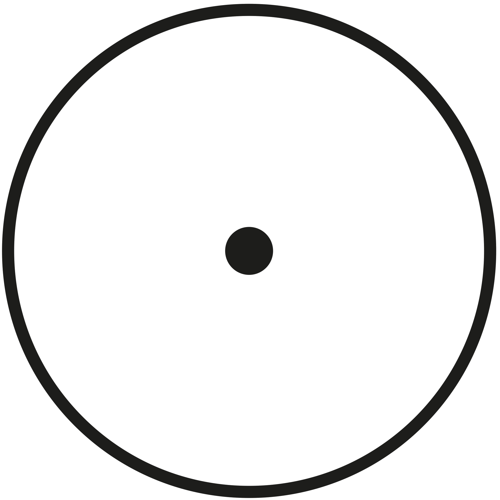

"...the essential notion of eternity, whereas the duration of time extends by succession of before and after. The proportion of eternity to the whole duration of time is as the proportion of an indivisible point to a continuous surface, [...] a circle: a point taken on the circumference does not coincide with every other point; but the centre, lying away from the circumference, is directly opposite to every point on the circumference. [...] Whatever therefore is in any portion of time, co-exists with the eternal, as present to it, although in respect to another portion of time it be past or future. But nothing can co-exist in presence with the eternal otherwise than with the whole of it, because it has no successive duration." (From St Thomas Aquinas's Summa contra Gentiles.)